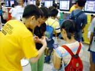
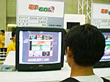
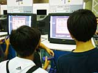
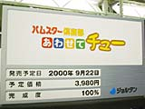

page1 ・・・ page2 ・・・ page3
|
| ●大刀（DAIKATANA）GB（仮称） 10月31日発売予定 コトブキシステム |
| NINTENDO64で人気を集めた同タイトルのゲームボーイ版。ストーリーは同じですが、ゲームボーイ版はパズルやシューティングなど、アクション要素が強くなっているそうです。 |
| ●ぽけっとぷよぷよ〜ん 9月22日発売予定 コンパイル |
|  いまや落ちモノパズルの定番とも言える「ぷよぷよ」シリーズ最新作が、ゲームボーイカラー専用で登場です。待ち時間中にスタッフと対戦できるのはいいですね。意外とお父さんたちにも人気のようで、シリーズの歴史を感じます。 |
| ●電車でGO！2 12月10日発売予定 サイバーフロント |
|  大ヒット電車運転ゲームのゲームボーイ版、第2弾。今回は、実写から取り込んだ鉄道写真100枚をスコアに応じてコレクションできるほか、鉄道図鑑の小冊子もついていて、ファンも大満足の構成になっています。「独自の圧縮システムで、初の64MBカートリッジを採用しています。プロの鉄道カメラマンが撮影した100種類の写真を、ぜひ全部集めて欲しいですね」と開発の方も気合が入ってます。 |
| ●Go！Go！ヒッチハイク2 11月24日発売予定 J・ウイング |
|  知恵を絞り、駆け引きを利用しながらヒッチハイクをして、ライバルたちよりはやく、アメリカ大陸を横断しよう。アイテムとお金の使い方がポイントだとか。 |
| ●ポケットクッキング 10月発売予定 J・ウイング |
| 経営不振でかたむいたお店を、料理で立て直すというお料理シミュレーション。最初に、和洋中、それにエスニックの4つのジャンルからお店を選んでプレーできるようになってますので、ジャンルを変えて何度でも遊べますね。「こちらは女の子が、向こう（ヒッチハイク2）は男の子が多いですね。お母さん達も遊ばれてましたよ」（スタッフの方） |
| ●ハムスター倶楽部 あわせてチュー 9月22日発売予定 ジョルダン |
|  かわいいハムスターの落ちモノパズルです。同じ数字を3つ以上重ねて消すだけなので、とっても簡単です。「ハムスターはかわいいので好きだけど、ゲームは初体験という女の子のために、簡単で、しかも何度も遊べるようにしてあるんです」、とのことでした。 |
ゲームボーイカラー体験コーナー（ライセンシー）その２
page1 ・・・ page2 ・・・ page3
|